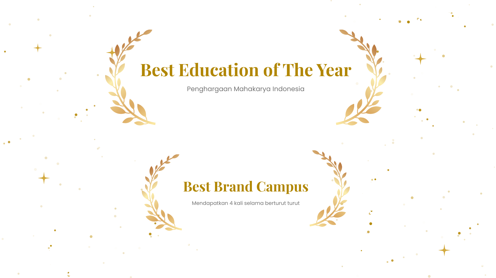

Institut Teknologi & Bisnis berbasis Inovasi Digital
Berawal dari kepedulian para pemerhati dan praktisi pendidikan terhadap pesatnya perkembangan TIK, ITB STIKOM Bali didirikan melalui Yayasan Widya Dharma Shanti pada 20 Mei 2001. Setelah melalui proses perizinan, pada 10 Agustus 2002 ITB STIKOM Bali resmi berdiri dengan dua program studi awal, yaitu Sistem Komputer (S1) dan Manajemen Informatika (D3), kemudian disusul Program Studi Sistem Informasi (S1) pada tahun 2009. Saat ini ITB STIKOM Bali berkembang menjadi perguruan tinggi bertaraf internasional dengan ribuan mahasiswa dan alumni, serta menjalin berbagai kerja sama nasional dan internasional dalam bidang Tri Dharma Perguruan Tinggi.

Pilih masa depanmu di dunia digital bersama kami
Software Engineering & Network Security
Big Data, Analisis Sistem & ERP
E-Commerce, Startup & Digital Marketing
IoT, Robotics & Hardware
Institut Teknologi dan Bisnis (ITB) STIKOM Bali menerima kunjungan strategis dari ...
Baca SelengkapnyaMengusung tema “Here We Go Again – Together We Shine”, acara ini membawa pesan ajakan untuk bangkit bersama...
Baca SelengkapnyaMulai tanggal 21 s.d. 27 Januari 2026 sesuai dengan jadwal kelas.
Dimohon memberikan penilaian didalam kuesioner proses belajar mengajar.
Pelaksanaan di Aula ITB Stikom Bali tanggal 11 Feb 2026.
Pusat kota Denpasar, fasilitas lengkap.
Dekat kawasan pariwisata internasional.
Lingkungan asri dan kondusif.